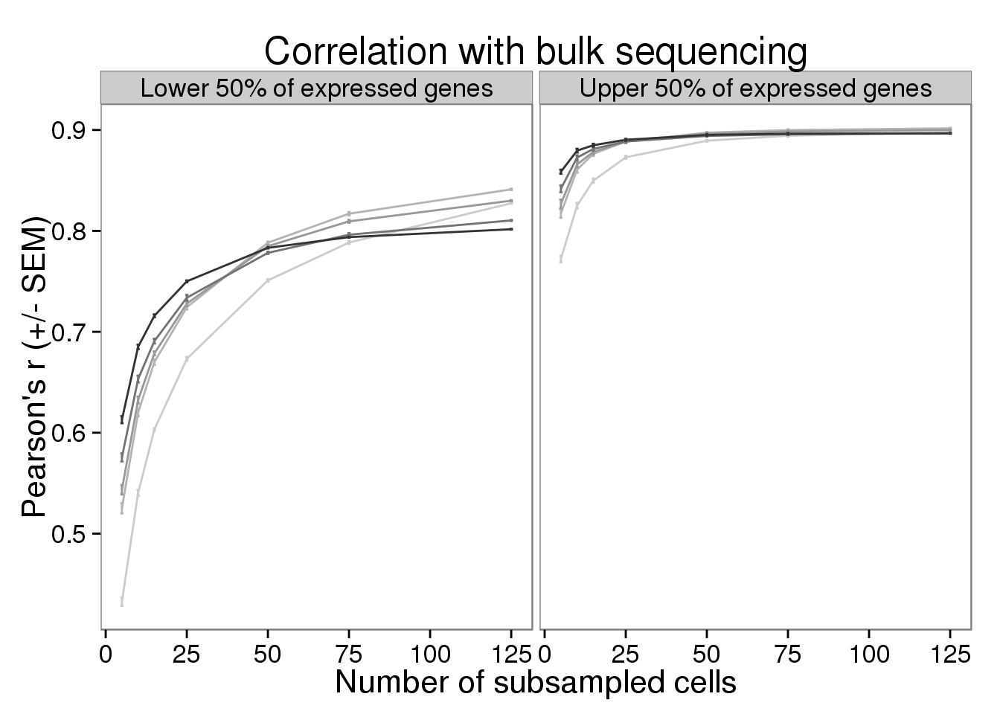
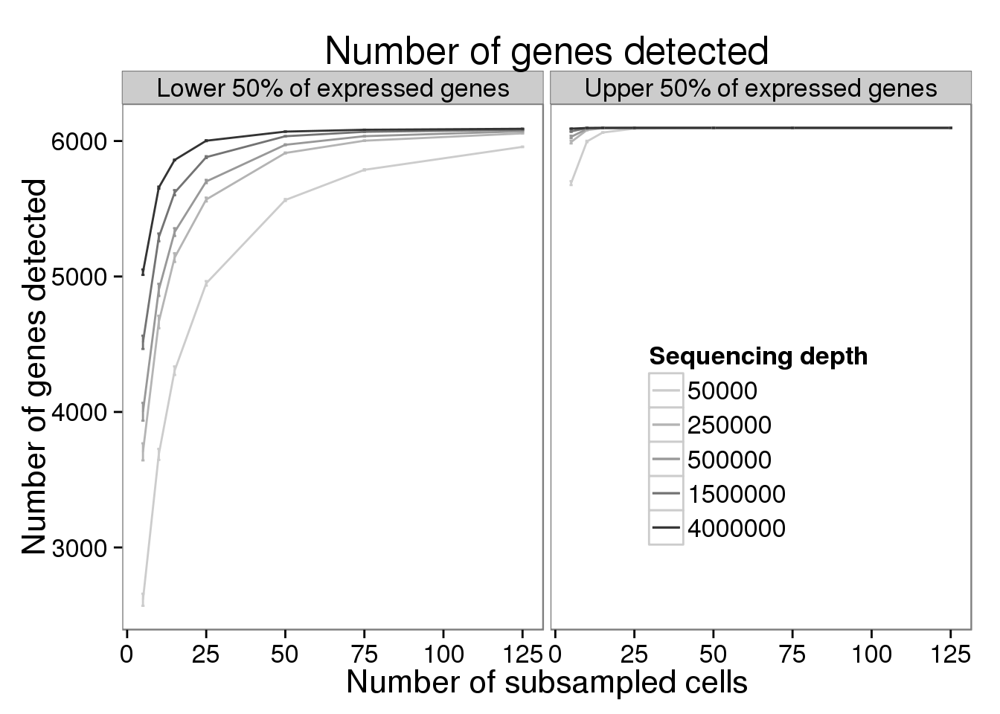
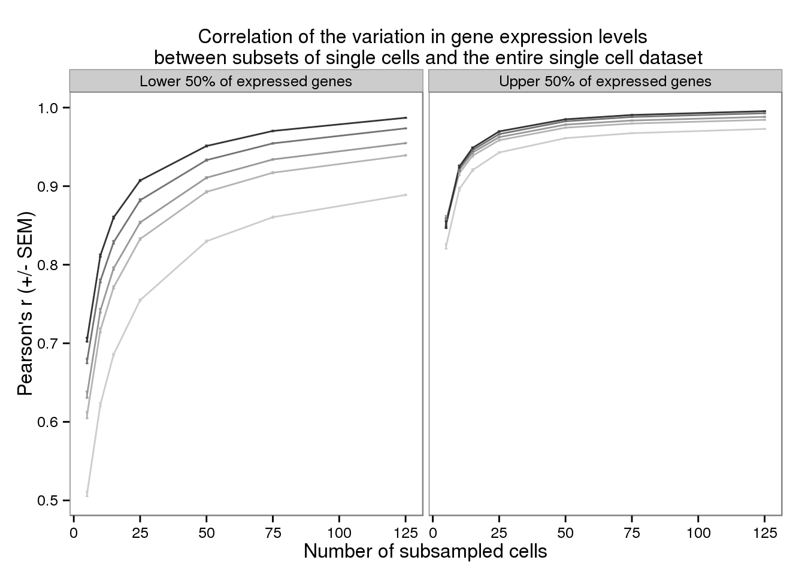
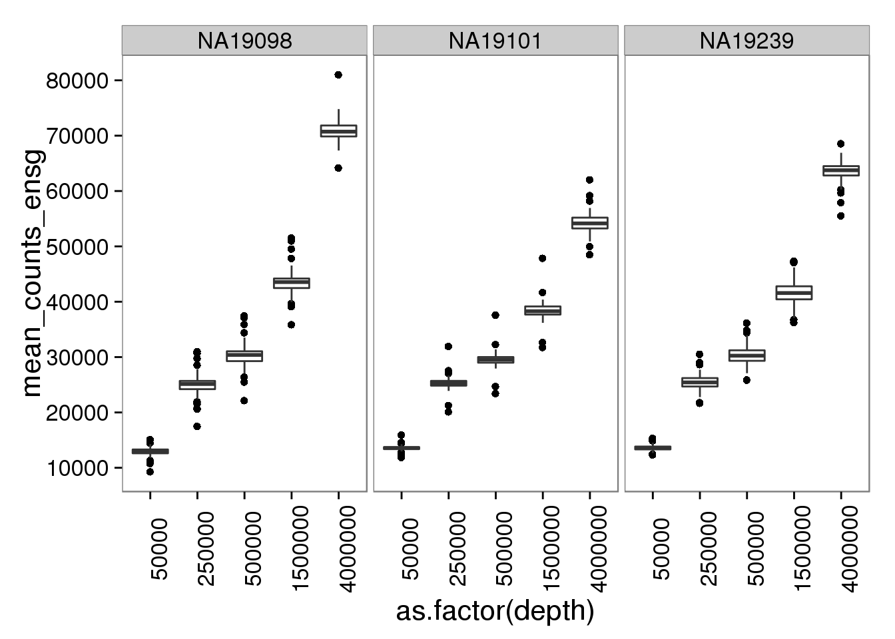
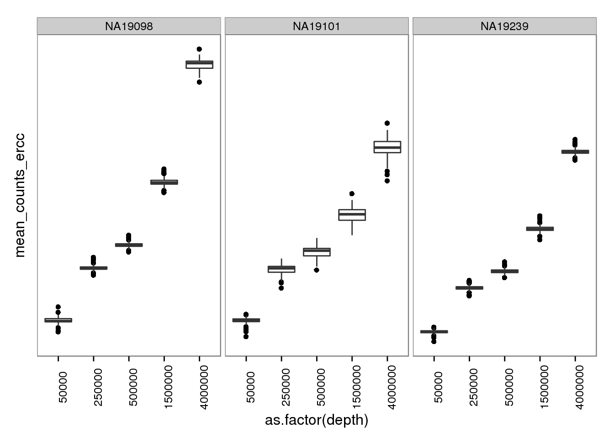

Final subsampling plots
2016-06-06
Last updated: 2016-06-11
Code version: 0242e47aaea33879b60143338a1f1f3232683dc6
The subsampled files were created using the pipeline described here, which is identical to the pipeline used to process the full data files.
Input
library("dplyr")
library("tidyr")
library("ggplot2")
library("cowplot")
theme_set(theme_bw(base_size = 16))
theme_update(panel.grid.minor.x = element_blank(),
panel.grid.minor.y = element_blank(),
panel.grid.major.x = element_blank(),
panel.grid.major.y = element_blank())d <- read.table("../data/subsampling-results.txt",
header = TRUE, sep = "\t", stringsAsFactors = FALSE)
str(d)'data.frame': 6240 obs. of 25 variables:
$ type : chr "reads" "molecules" "reads" "molecules" ...
$ depth : int 50000 50000 50000 50000 50000 50000 250000 250000 250000 250000 ...
$ gene_subset : chr "all" "all" "lower" "lower" ...
$ seed : int 1 1 1 1 1 1 1 1 1 1 ...
$ subsampled_cells: int 5 5 5 5 5 5 5 5 5 5 ...
$ individual : chr "NA19098" "NA19098" "NA19098" "NA19098" ...
$ replicate : logi NA NA NA NA NA NA ...
$ lower_q : num 0 0 0 0 0.5 0.5 0 0 0 0 ...
$ upper_q : num 1 1 0.5 0.5 1 1 1 1 0.5 0.5 ...
$ available_ensg : int 12192 12192 12192 12192 12192 12192 12192 12192 12192 12192 ...
$ used_ensg : int 12192 12192 6096 6096 6096 6096 12192 12192 6096 6096 ...
$ available_ercc : int 43 43 43 43 43 43 43 43 43 43 ...
$ used_ercc : int 43 43 22 22 22 22 43 43 22 22 ...
$ potential_cells : int 142 142 142 142 142 142 142 142 142 142 ...
$ available_cells : int 142 142 142 142 142 142 142 142 142 142 ...
$ pearson_ensg : num 0.774 0.79 0.368 0.372 0.727 ...
$ pearson_ercc : num 0.893 0.907 0.456 0.406 0.914 ...
$ spearman_ensg : num 0.772 0.79 0.405 0.411 0.703 ...
$ spearman_ercc : num 0.854 0.853 0.456 0.383 0.955 ...
$ detected_ensg : int 7972 7972 2413 2413 5559 5559 9493 9493 3550 3550 ...
$ detected_ercc : int 29 29 10 10 20 20 35 35 14 14 ...
$ mean_counts_ensg: num 22471 12126 1292 738 21180 ...
$ mean_counts_ercc: num 568.8 269 8.2 3.2 561.4 ...
$ var_pearson : num 0.804 0.846 0.4 0.455 0.76 ...
$ var_spearman : num 0.762 0.792 0.451 0.467 0.693 ...d_grouped <- d %>%
group_by(type, depth, gene_subset, subsampled_cells,
individual, potential_cells, available_cells,
lower_q, upper_q, available_ensg, used_ensg,
available_ercc, used_ercc) %>%
summarize(mean_detected = mean(detected_ensg),
sem_detected = sd(detected_ensg) / sqrt(length(detected_ensg)),
mean_bulk = mean(pearson_ensg),
sem_bulk = sd(pearson_ensg) / sqrt(length(pearson_ensg)),
mean_var = mean(var_pearson),
sem_var = sd(var_pearson) / sqrt(length(var_pearson)))d_filter <- d_grouped %>% filter(individual == "NA19239",
type == "molecules",
gene_subset %in% c("lower", "upper"))
d_filter$gene_subset <- factor(d_filter$gene_subset,
levels = c("lower", "upper"),
labels = c("Lower 50% of expressed genes",
"Upper 50% of expressed genes"))Figures
plot_bulk <- ggplot(d_filter,
aes(x = subsampled_cells, y = mean_bulk,
color = as.factor(depth))) +
geom_line() +
geom_errorbar(aes(ymin = mean_bulk - sem_bulk,
ymax = mean_bulk + sem_bulk),
width = 1) +
facet_wrap(~gene_subset) +
scale_color_grey(start = 0.8, end = 0.2, name = "Sequencing depth") +
theme(legend.position = "none") +
labs(x = "Number of subsampled cells",
y = "Pearson's r (+/- SEM)",
title = "Correlation with bulk sequencing")
plot_bulk
plot_detected <- ggplot(d_filter,
aes(x = subsampled_cells, y = mean_detected,
color = as.factor(depth))) +
geom_line() +
geom_errorbar(aes(ymin = mean_detected - sem_detected,
ymax = mean_detected + sem_detected),
width = 1) +
facet_wrap(~gene_subset) +
scale_color_grey(start = 0.8, end = 0.2, name = "Sequencing depth") +
theme(legend.position = c(0.75, 0.35)) +
labs(x = "Number of subsampled cells",
y = "Number of genes detected",
title = "Number of genes detected")
plot_detected
plot_var <- ggplot(d_filter,
aes(x = subsampled_cells, y = mean_var,
color = as.factor(depth))) +
geom_line() +
geom_errorbar(aes(ymin = mean_var - sem_var,
ymax = mean_var + sem_var),
width = 1) +
facet_wrap(~gene_subset) +
scale_color_grey(start = 0.8, end = 0.2, name = "Sequencing depth") +
theme(legend.position = "none") +
labs(x = "Number of subsampled cells",
y = "Pearson's r (+/- SEM)",
title = "Correlation with cell-to-cell variance of full data")
plot_var
plot_final <- plot_grid(plot_bulk, plot_detected, plot_var,
ncol = 1, labels = LETTERS[1:3])
plot_final
png("../paper/figure/fig-subsample.png", width = 8, height = 12, units = "in", res = 300)
plot_final
dev.off()png
2 Number of molecules per sequencing depth
molecules_per_depth <- d %>%
filter(gene_subset == "all", type == "molecules")plot_mol_depth_ensg <- ggplot(molecules_per_depth,
aes(x = as.factor(depth),
y = mean_counts_ensg)) +
geom_boxplot() +
facet_wrap(~individual) +
scale_y_continuous(breaks = seq(0, 1e5, by = 1e4)) +
theme(axis.text.x = element_text(angle = 90))
plot_mol_depth_ensg
plot_mol_depth_ercc <- plot_mol_depth_ensg %+% aes(y = mean_counts_ercc)
plot_mol_depth_ercc
Session information
sessionInfo()R version 3.2.0 (2015-04-16)
Platform: x86_64-unknown-linux-gnu (64-bit)
locale:
[1] LC_CTYPE=en_US.UTF-8 LC_NUMERIC=C
[3] LC_TIME=en_US.UTF-8 LC_COLLATE=en_US.UTF-8
[5] LC_MONETARY=en_US.UTF-8 LC_MESSAGES=en_US.UTF-8
[7] LC_PAPER=en_US.UTF-8 LC_NAME=C
[9] LC_ADDRESS=C LC_TELEPHONE=C
[11] LC_MEASUREMENT=en_US.UTF-8 LC_IDENTIFICATION=C
attached base packages:
[1] stats graphics grDevices utils datasets methods base
other attached packages:
[1] cowplot_0.3.1 ggplot2_1.0.1 tidyr_0.2.0 dplyr_0.4.2 knitr_1.10.5
loaded via a namespace (and not attached):
[1] Rcpp_0.12.4 magrittr_1.5 MASS_7.3-40 munsell_0.4.3
[5] colorspace_1.2-6 R6_2.1.1 stringr_1.0.0 httr_0.6.1
[9] plyr_1.8.3 tools_3.2.0 parallel_3.2.0 grid_3.2.0
[13] gtable_0.1.2 DBI_0.3.1 htmltools_0.2.6 lazyeval_0.1.10
[17] yaml_2.1.13 assertthat_0.1 digest_0.6.8 reshape2_1.4.1
[21] formatR_1.2 bitops_1.0-6 RCurl_1.95-4.6 evaluate_0.7
[25] rmarkdown_0.6.1 labeling_0.3 stringi_1.0-1 scales_0.4.0
[29] proto_0.3-10